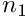

3.6.1 Basis File Format (Prev) 3.6.3 K-Grid File Format (Next)
PSCF can also output the values of set of fields in a format that gives values on the nodes of the regular grid that is used by the pseudo-spectral algorithm for solving the modified diffusion equation.
Example: 2D Hex Phase
Here is example of a converged omega field for a hex phase of a diblock copolymer melt:
File Format
Like other field formats, this file format contains a header section with crystallographic information followed by a data section. The header section is similar that for the symmetry adapted format, except that the last variable is an array "ngrid" of integers giving the number of grid points in each direction. In this example, because it is a two-dimensional crystal (dim = 2), this array contains two numbers, both 24, indicating a grid in which there are 24 grid points along each coordinate axis. To describe a hexagonal phase, we use a non-orthogonal coordinate system in which each axis is parallel to one of the Bravais lattice vectors, which in a hexagonal phase have an angle of 60 degrees between them.
The data section contains the values of fields associated with N_monomer monomer types at grid points given by
where  is the dimensionality of the crystal (denoted by "dim" in the header file), is a Bravais lattice vector,
is the dimensionality of the crystal (denoted by "dim" in the header file), is a Bravais lattice vector,  is the number of grid points along direction
is the number of grid points along direction  , and
, and  is an integer index in the range .
is an integer index in the range .
The number of rows in the data section is equal to the total number of grid points. Each row in this section contains values of all field components at a single grid point. The number of columns is equal to the number of monomer types, so that data in column  contains the values of the field associated with monomer type .
contains the values of the field associated with monomer type .
Grid points are listed in order using index  as the most rapidly varying (innermost) loop index. This is implemented in the field_io_mod module, in subroutines output_field_grid and input_field_grid as a fortran loop of the form::
3.6.1 Basis File Format (Prev) 3.6 Field Files (Up) 3.6.3 K-Grid File Format (Next)